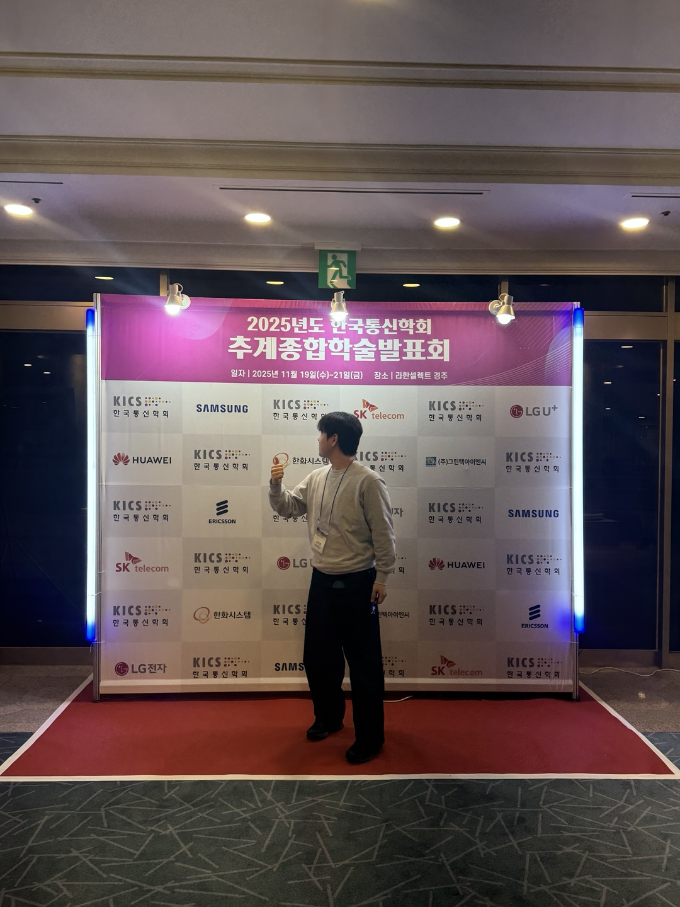
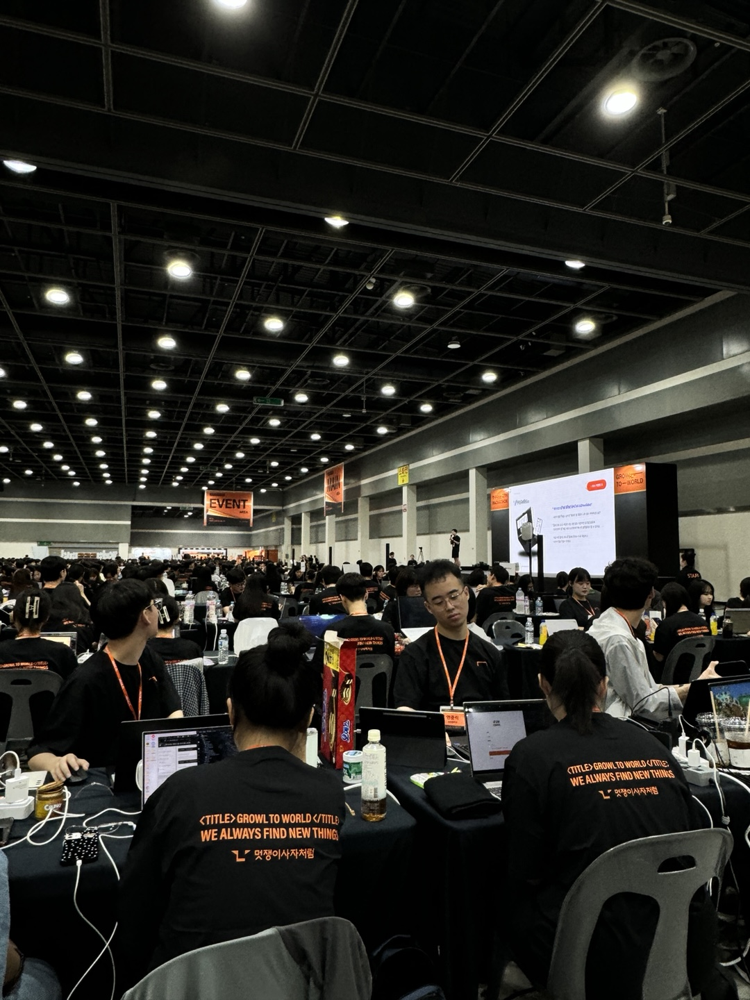

명지대학교 포트폴리오 경진대회 2026
정보통신공학과 4학년 AI 특화 팀.
Vision AI, LLM·Agent, 통신 AI를 아우르는
세 명의 엔지니어.
VIDEO
저희가 AI를 활용해 직접 제작한 팀 소개 영상과 AI 혁신 트렌드 영상입니다.
CORE QUESTION · PPT SLIDE 4
저희는 그 엔지니어가 되겠습니다.
SECTION 01
명지대학교 정보통신공학과 4학년 · 공통 희망직무: AI 엔지니어


SECTION 02
MBTI 성향 분석과 홀랜드 직업흥미 검사를 통한 직무 적합성 확인 — 팀원 전원 동일 결과
SECTION 03
글로벌 AI 시장 급성장 — Vision AI · 통신 AI · LLM/Agent 전 분야 확산
SECTION 04
공통 목표 직무 — AI 엔지니어 (Vision AI · LLM/Agent AI · 통신 AI)
데이터를 기반으로 문제를 분석하고, AI 모델을 통해 자동화 · 예측 · 의사결정을 지원
SECTION 05
팀원별 보유 역량, 자격증, 연구 및 프로젝트 경험
SECTION 06
경진대회 · 논문 · 연구 · 인턴십까지 — 팀 AIM이 쌓아온 실제 이력을 확인하세요




SECTION 07
졸업 전후 단계별 목표 · 측정 가능한 시간 기반 계획
SECTION 08
팀원별 강점·약점·기회·위협 분석 및 전략적 대응
정보통신공학 기반의 융합 설계 역량(S) × 급성장하는 AI 시장과 대기업 AI 인재 수요(O) → 데이터 전처리부터 배포까지 전 파이프라인을 주도하는 Full-Stack AI 엔지니어로 포지셔닝
인프라 운영 경험 부족(W) → 최신 MLOps 파이프라인 구축 프로젝트로 극복. 실무 경험 부족(W) × 경쟁 심화(T) → 인턴십·경진대회·협업 프로젝트로 실전 역량 증명